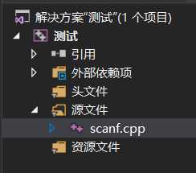
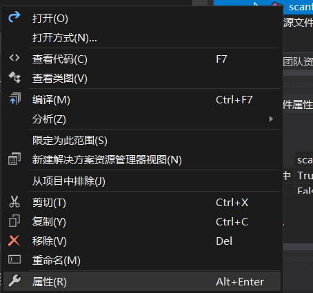
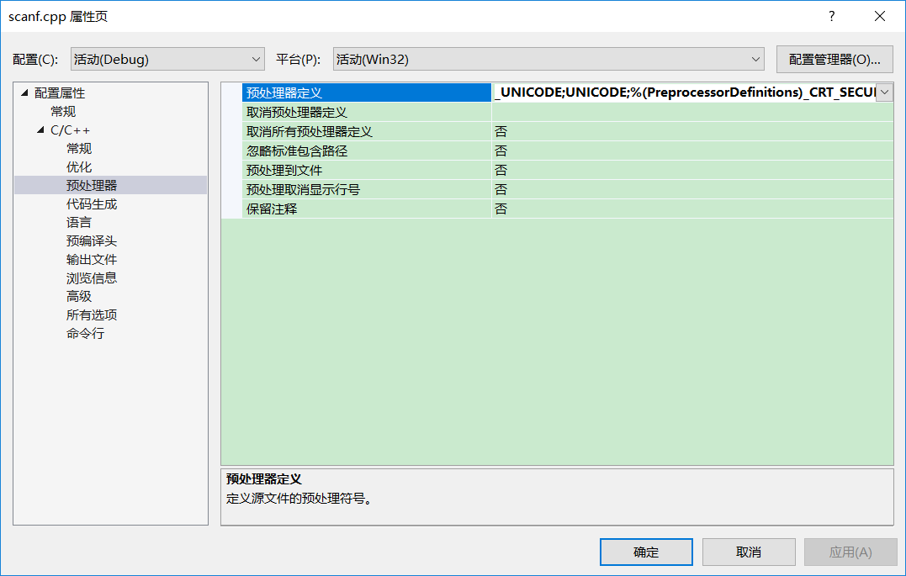

直到这次写代码我才知道VS中用scanf是会被警告的，VS中正规的类似于scanf（）函数的输入函数是scanf_s()只有使用这个函数你才不会报错，它有三个参分别是数据类型，地址，最大存储量，
还有两种方法
2. 或者修改文件属性也可以做到和上面一样的效果
右键点击源文件，

点击属性

依次选中：C/C++ >> 预处理器，在右侧预处理器定义右侧添加上：_CRT_SECURE_NO_DEPRECATE

void inqueue(person all[], queue &man, queue &woman,int n) {//根据性别分别如男队和女队
for (int i = 0; i < n; i++) {
if (all[i].sex == 1) {
//strcpy(man.elem[man.number], all[i].name);
strcpy(man.elem[man.rear], all[i].name);
man.rear = (man.rear + 1) % 100;
man.number++;
}
else {
//strcpy(woman.elem[woman.number], all[i].name);
strcpy(woman.elem[woman.rear], all[i].name);
woman.rear = (woman.rear + 1) % 100;
woman.number++;
}
}
}下面就是我这次写的代码，很low，很菜，哎，我太菜了。
#define _CRT_SECURE_NO_WARNINGS
#include<stdio.h>
#include<string.h>
#include<iostream>
#include<malloc.h>
#include<math.h>
#include<windows.h>
using namespace std;
typedef int status;
int n;
typedef struct {
char name[20];
int sex;
}person;
typedef struct {
int front;
int rear;
char elem[100][20];
int number;//人的数量
}queue;
void inperson(person &all) {
cout << "请输这位同学的姓名和性别:";
scanf("%s", all.name);//在c和c++语言中输入字符串向字符数组中是不需要加&的，
/*输入参数是已经定义好的“字符数组名”, 不用加&, 因为在C语言中数组名就代表该数组的起始地址*/
//cout << "请输入这位同学的性别：";
scanf("%d", &all.sex);
}
void inqueue(person all[], queue &man, queue &woman,int n) {//根据性别分别如男队和女队
for (int i = 0; i < n; i++) {
if (all[i].sex == 1) {
//strcpy(man.elem[man.number], all[i].name);
strcpy(man.elem[man.rear], all[i].name);
man.rear = (man.rear + 1) % 100;
man.number++;
}
else {
//strcpy(woman.elem[woman.number], all[i].name);
strcpy(woman.elem[woman.rear], all[i].name);
woman.rear = (woman.rear + 1) % 100;
woman.number++;
}
}
}
status initqueue(queue &man) {
/*int n,i;
cout<<"请输入队中的人员数量：";
cin>>n;
man.number = n + 1;
cout<<"输入队中人员的姓名";
for(i = 0;i < n;i ++){
scanf("%s",&man.elem[i]);
}
man.rear = n;
*/
man.rear = man.front = 0;
man.number = 0;
return 0;
}
int emptyqueue(queue man) {//用于判断队列中还有没有人
if (man.front == man.rear)
return 0;
else
return 1;
}
int dequeue(queue &man, char *str) {//删除队首元素
if (man.front == man.rear)
return 0;
else {
strcpy(str, man.elem[man.front]);
man.front = (man.front + 1) % 100;
man.number--;
return 1;
}
}
int main() {
person all[100];
int n;//总人数
queue man;
queue woman;
initqueue(man);
initqueue(woman);//初始化两个队列，使两个队列的首和尾都为零
cout << "请输入本班的人数 ：";
cin >> n;
for (int i = 0; i < n; i++) {//把所有人都存入一个队列
inperson(all[i]);
}
//根据性别入队列
inqueue(all, man, woman,n);//按性别分别入队
char str[20];
while (emptyqueue(man) && emptyqueue(woman)) {//配对,改这里没有想好停止条件，我本来写的是“||”应该是当两个都不为空时才停止
dequeue(man, str);
dequeue(woman, str);
}
if (man.front == man.rear&&woman.front == woman.rear) {
cout << "完全配对";
cout << endl;
}
else if (woman.front != woman.rear) {
cout << "下一位配对的女性是：";
printf("%s", woman.elem[woman.front]);
cout << endl;
}
else
printf("下一位配对的男性是：%s", man.elem[man.front]);
Sleep(50000);
return 0;
}给自己提个醒吧，重视基础，出来混总是要还的，所以还是好好学习，打牢自己的基础吧